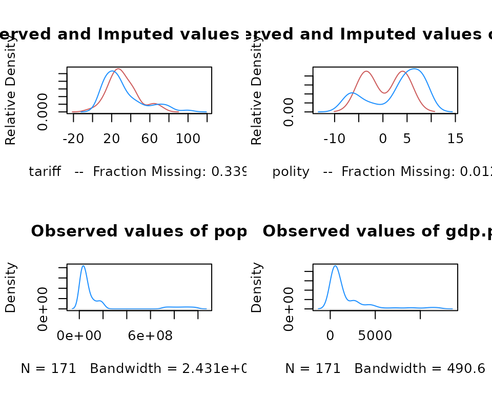
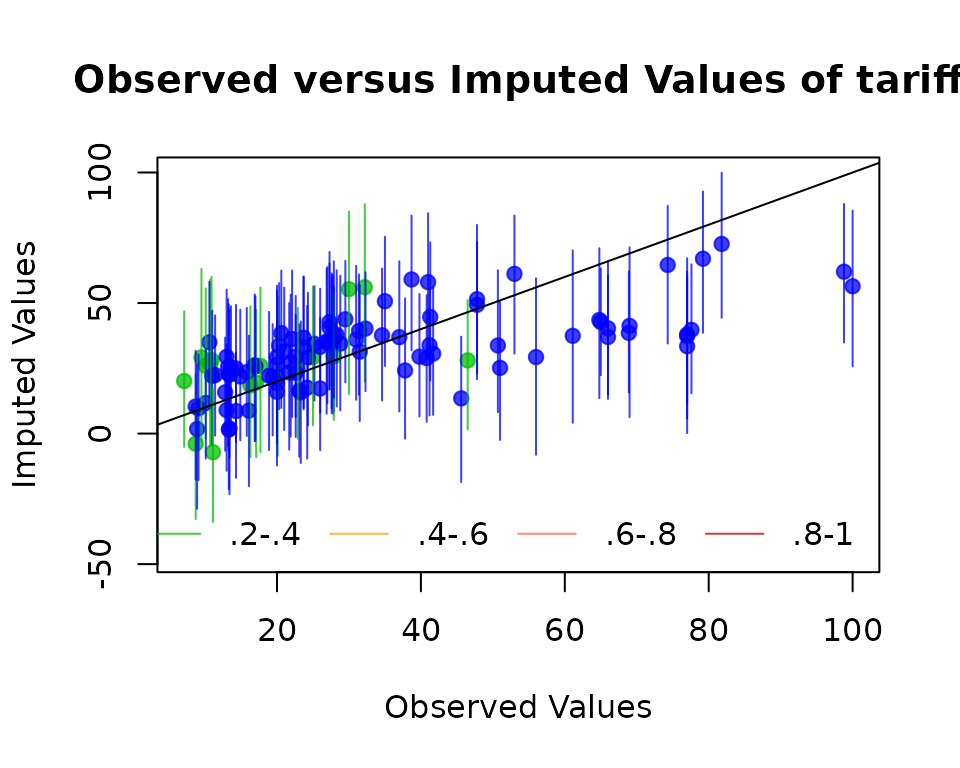
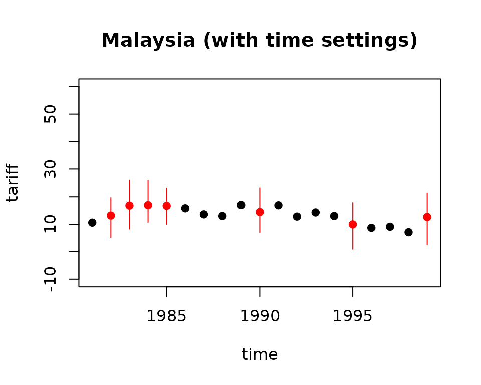

Multiple Imputation Diagnostics
2024-04-10
diagnostics.RmdAmelia currently provides a number of diagnostic tools to inspect the
imputations that are created. To illustrate these, we use the
freetrade data from the package:
## Loading required package: Rcpp## ##
## ## Amelia II: Multiple Imputation
## ## (Version 1.8.2, built: 2024-03-04)
## ## Copyright (C) 2005-2024 James Honaker, Gary King and Matthew Blackwell
## ## Refer to http://gking.harvard.edu/amelia/ for more information
## ##One check on the plausibility of the imputation model is check the distribution of imputed values to the distribution of observed values. Obviously we cannot expect, a priori, that these distribution will be identical as the missing values may differ systematically from the observed value–this is fundamental reason to impute to begin with! Imputations with strange distributions or those that are far from the observed data may indicate that imputation model needs at least some investigation and possibly some improvement.
The plot.amelia() method works on output from
amelia() and, by default, shows for each variable a plot of
the relative frequencies of the observed data with an overlay of the
relative frequency of the imputed values.
plot(a.out, which.vars = 3:6)
where the argument which.vars indicates which of the
variables to plot (in this case, we are taking the 3rd through the 6th
variables).
The imputed curve (in red) plots the density of the mean imputation over the \(m\) datasets. That is, for each cell that is missing in the variable, the diagnostic will find the mean of that cell across each of the \(m\) datasets and use that value for the density plot. The black distributions are the those of the observed data. When variables are completely observed, their densities are plotted in blue. These graphs will allow you to inspect how the density of imputations compares to the density of observed data. Some discussion of these graphs can be found in Abayomi, Gelman, and Levy (2008). Minimally, these graphs can be used to check that the mean imputation falls within known bounds, when such bounds exist in certain variables or settings.
We can also use the function compare.density() directly
to make these plots for an individual variable:
compare.density(a.out, var = "signed")
Overimpute
Overimputing is a technique we have developed to judge the fit of the imputation model. Because of the nature of the missing data mechanism, it is impossible to tell whether the mean prediction of the imputation model is close to the unobserved value that is trying to be recovered. By definition this missing data does not exist to create this comparison, and if it existed we would no longer need the imputations or care about their accuracy. However, a natural question the applied researcher will often ask is how accurate are these imputed values?
Overimputing involves sequentially treating each of the observed values as if they had actually been missing. For each observed value in turn we then generate several hundred imputed values of that observed value, as if it had been missing. While \(m=5\) imputations are sufficient for most analysis models, this large number of imputations allows us to construct a confidence interval of what the imputed value would have been, had any of the observed data been missing. We can then graphically inspect whether our observed data tends to fall within the region where it would have been imputed had it been missing.
For example, we can run the overimputation diagnostic on our data by running
overimpute(a.out, var = "tariff")
Our overimputation diagnostic runs this procedure through all of the
observed values for a user selected variable. We can graph the estimates
of each observation against the true values of the observation. On this
graph, a \(y=x\) line indicates the
line of perfect agreement; that is, if the imputation model was a
perfect predictor of the true value, all the imputations would fall on
this line. For each observation, overimpute() also plots
90% confidence intervals that allows the user to visually inspect the
behavior of the imputation model. By checking how many of the confidence
intervals cover the \(y=x\) line, we
can tell how often the imputation model can confidently predict the true
value of the observation.
Occasionally, the overimputation can display unintuitive results. For example, different observations may have different numbers of observed covariates. If covariates that are useful to the prediction are themselves missing, then the confidence interval for this observation will be much larger. In the extreme, there may be observations where the observed value we are trying to overimpute is the only observed value in that observation, and thus there is nothing left to impute that observation with when we pretend that it is missing, other than the mean and variance of that variable. In these cases, we should correctly expect the confidence interval to be very large.
An example of this graph is show here:
In this simulated bivariate dataset, one variable is overimputed and the results displayed. The second variable is either observed, in which case the confidence intervals are very small and the imputations (yellow) are very accurate, or the second variable is missing in which case this variable is being imputed simply from the mean and variance parameters, and the imputations (red) have a very large and encompassing spread. The circles represent the mean of all the imputations for that value. As the amount of missing information in a particular pattern of missingness increases, we expect the width of the confidence interval to increase. The color of the confidence interval reflects the percent of covariates observed in that pattern of missingness, as reflected in the legend at the bottom.
Overdispersed Starting Values
If the data given to amelia() has a poorly behaved
likelihood, the EM algorithm can have problems finding a global maximum
of the likelihood surface and starting values can begin to effect
imputations. Because the EM algorithm is deterministic, the point in the
parameter space where you start it can impact where it ends, though this
is irrelevant when the likelihood has only one mode. However, if the
starting values of an EM chain are close to a local maximum, the
algorithm may find this maximum, unaware that there is a global maximum
farther away. To make sure that our imputations do not depend on our
starting values, a good test is to run the EM algorithm from multiple,
dispersed starting values and check their convergence. In a well behaved
likelihood, we will see all of these chains converging to the same
value, and reasonably conclude that this is the likely global maximum.
On the other hand, we might see our EM chain converging to multiple
locations. The algorithm may also wander around portions of the
parameter space that are not fully identified, such as a ridge of equal
likelihood, as would happen for example, if the same variable were
accidentally included in the imputation model twice.
Amelia includes a diagnostic to run the EM chain from multiple starting values that are overdispersed from the estimated maximum. The overdispersion diagnostic will display a graph of the paths of each chain. Since these chains move through spaces that are in an extremely high number of dimensions and can not be graphically displayed, the diagnostic reduces the dimensionality of the EM paths by showing the paths relative to the largest principle components of the final mode(s) that are reached. Users can choose between graphing the movement over the two largest principal components, or more simply the largest dimension with time (iteration number) on the \(x\)-axis. The number of EM chains can also be adjusted. Once the diagnostic draws the graph, the user can visually inspect the results to check that all chains convergence to the same point.
For our original model, this is a simple call to
disperse():
disperse(a.out, dims = 1, m = 5)
disperse(a.out, dims = 2, m = 5)where m designates the number of places to start EM
chains from and dims are the number of dimensions of the
principal components to show.
In one dimension, the diagnostic plots movement of the chain on the
\(y\)-axis and time, in the form of the
iteration number, on the \(x\)-axis.
The first plot shows a well behaved likelihood, as the starting values
all converge to the same point. The black horizontal line is the point
where amelia() converges when it uses the default method
for choosing the starting values. The diagnostic takes the end point of
this chain as the possible maximum and disperses the starting values
away from it to see if the chain will ever finish at another mode.
Time-series Plots
As discussed above, information about time trends and fixed effects
can help produce better imputations. One way to check the plausibility
of our imputation model is to see how it predicts missing values in a
time series. If the imputations for the Malaysian tariff rate were
drastically higher in 1990 than the observed years of 1989 or 1991, we
might worry that there is a problem in our imputation model. Checking
these time series is easy to do with tscsPlot(). Simply
choose the variable (with the var argument) and the
cross-section (with the cs argument) to plot the observed
time-series along with distributions of the imputed values for each
missing time period. For instance, we can get the plot of the
tariff variable for Malaysia with the following
commands:
a.out.time <- amelia(freetrade, ts = "year", cs = "country", polytime = 1,
intercs = TRUE, p2s = 0)
tscsPlot(a.out.time, cs = "Malaysia", main = "Malaysia (with time settings)",
var = "tariff", ylim = c(-10, 60))
Here, the black point are observed tariff rates for Malaysia from 1980 to 2000. The red points are the mean imputation for each of the missing values, along with their 95% confidence bands. We draw these bands by imputing each of missing values 100 times to get the imputation distribution for that observation.
In figure \(\ref{fig:tsplot1}\), we can see that the imputed 1990 tariff rate is quite in line with the values around it. Notice also that values toward the beginning and end of the time series have slightly higher imputation variance. This occurs because the fit of the polynomials of time in the imputation model have higher variance at the beginning and end of the time series. This is intuitive because these points have fewer neighbors from which to draw predictive power.
A word of caution is in order. As with comparing the histograms of
imputed and observed values, there could be reasons that the missing
values are systematically different than the observed time series. For
instance, if there had been a major financial crisis in Malaysia in 1990
which caused the government to close off trade, then we would expect
that the missing tariff rates should be quite different than the
observed time series. If we have this information in our imputation
model, we might expect to see out-of-line imputations in these
time-series plots. If, on the other hand, we did not have this
information, we might see “good” time-series plots that fail to point
out this violation of the MAR assumption. Our imputation model would
produce poor estimates of the missing values since it would be unaware
that both the missingness and the true unobserved tariff rate depend on
another variable. Hence, tscsPlot() is useful for finding
obvious problems in imputation model and comparing the efficiency of
various imputation models, but it cannot speak to the untestable
assumption of MAR.
Missingness maps
One useful tool for exploring the missingness in a dataset is a missingness map. This is a map that visualizes the dataset a grid and colors the grid by missingness status. The column of the grid are the variables and the rows are the observations, as in any spreadsheet program. This tool allows for a quick summary of the patterns of missingness in the data.
If we simply call the missmap() function on our output
from amelia(),
missmap(a.out)The missmap() function arrange the columns so that the
variables are in decreasing order of missingness from left to right. If
the cs argument was set in the amelia
function, the labels for the rows will indicate where each of the
cross-sections begin.
In this missingness map, it is clear that the tariff rate is the
variable most missing in the data and it tends to be missing in blocks
of a few observations. Gross international reserves
(intresmi) and financial openness (fivop), on
the other hand, are missing mostly at the end of each cross-section.
This suggests missingness by merging, when variables with
different temporal coverages are merged to make one dataset. Sometimes
this kind of missingness is an artifact of the date at which the data
was merged and researchers can resolve it by finding updated versions of
the relevant variables.
The missingness map is an important tool for understanding the patterns of missingness in the data and can often indicate potential ways to improve the imputation model or data collection process.